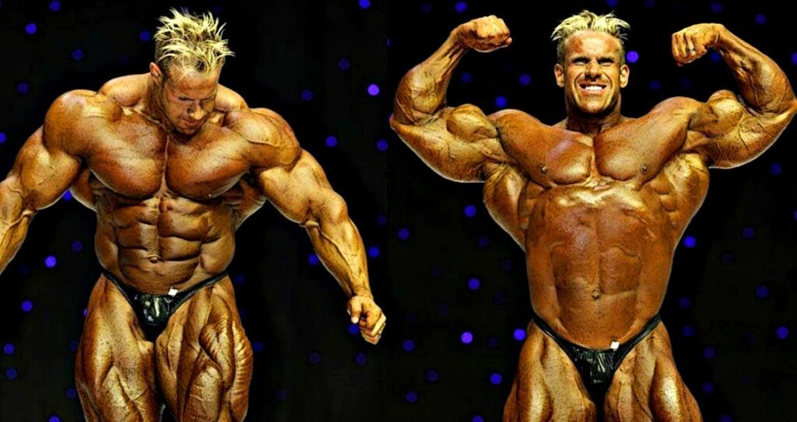

O fisiculturismo nos anos 90
4 vezes campeão do Mister Olympia, Jay Cutler é um dos maiores fisiculturistas, veja sua biografia contando sua trajetória ao longo de sua vida com fotos e vídeos. Apaixonado por atividades físicas desde criança, o tetra campeão de uma das maiores competições de fisiculturismo, Jay Cutler, começou sua vida em Sterling, subúrbio de Worcester County, em três de agosto de 1973, no estado de Massachusetts, Estados Unidos da América. Criado em fazenda, o mais de sete, três irmão e três irmãs, seus exercícios abrangiam além de bicicletas, brincadeiras com os amigos, tarefas necessárias para o bom funcionamento do local onde ele morava.
